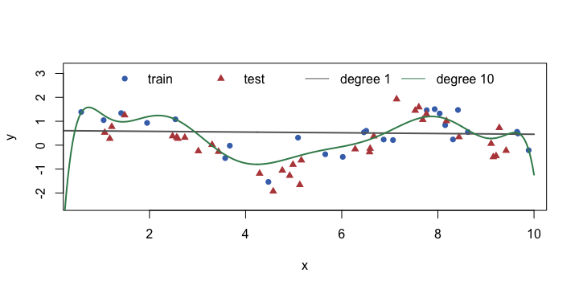
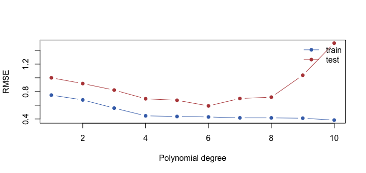

モデルを複雑にするとどうなるか
sin 波にノイズを加えた架空のデータ（60 点）を、訓練 25 点とテスト 35 点に分けます。lm(y ~ poly(x, d)) の次数 dが大きいほど、曲線は複雑に曲がれます。
set.seed(15) x <- runif(60, 0, 10); y <- sin(x) + rnorm(60, 0, 0.5) dat <- data.frame(x, y) train <- dat[1:25, ]; test <- dat[26:60, ] rmse <- function(a, b) sqrt(mean((a - b)^2)) fit1 <- lm(y ~ poly(x, 1), data = train) fit10 <- lm(y ~ poly(x, 10), data = train) xs <- data.frame(x = seq(0, 10, length.out = 300)) plot(train$x, train$y, pch = 16, col = "#4471B8", xlab = "x", ylab = "y", ylim = c(-2.5, 3.2)) points(test$x, test$y, pch = 17, col = "#B84848") lines(xs$x, predict(fit1, xs), lwd = 2, col = "gray40") lines(xs$x, predict(fit10, xs), lwd = 2, col = "#3C8A5A") legend("top", c("train", "test", "degree 1", "degree 10"), ncol = 4, pch = c(16, 17, NA, NA), lty = c(NA, NA, 1, 1), col = c("#4471B8", "#B84848", "gray40", "#3C8A5A"), bty = "n")

灰色の直線（次数 1）は単純すぎて、波を捉えられません（学習不足）。緑の次数 10 は訓練の点（青）に沿ってうねりますが、端では不自然に大きく振れています（過学習）。
訓練の誤差とテストの誤差
次数を 1 から 10 まで変えて、訓練とテストの RMSE を比べます。
deg <- 1:10 err <- t(sapply(deg, function(d) { f <- lm(y ~ poly(x, d), data = train) c(train = rmse(train$y, predict(f, train)), test = rmse(test$y, predict(f, test))) })) round(cbind(degree = deg, err), 3)[c(1, 3, 5, 6, 8, 10), ] matplot(deg, err, type = "b", pch = 16, lty = 1, col = c("#4471B8", "#B84848"), xlab = "Polynomial degree", ylab = "RMSE") legend("topright", c("train", "test"), col = c("#4471B8", "#B84848"), lty = 1, pch = 16, bty = "n")

訓練誤差（青）は次数を上げるほど下がり続けます。一方、テスト誤差（赤）は途中まで下がり、あとで上がります。この U 字の底が、ちょうどよい複雑さです。
| 状態 | 訓練誤差 | テスト誤差 | 対策 |
|---|---|---|---|
| 学習不足 (high bias) | 大きい | 大きい | モデルを複雑に・特徴を増やす |
| ちょうどよい | 小さい | 小さい | — |
| 過学習 (high variance) | とても小さい | 大きい | データを増やす・単純に・正則化 |
交差検証（k-fold CV）
テストが 35 点しかないと、偶然のゆれが大きく、次数の選び方も不安定です。交差検証は、データを k 個（ここでは 5 個）に分け、1 つをテスト・残りを訓練にする作業を k 回くり返して、誤差を平均します。
set.seed(2) folds <- sample(rep(1:5, length.out = nrow(train))) # fold id for each training row cv_rmse <- function(d) mean(sapply(1:5, function(k) { f <- lm(y ~ poly(x, d), data = train[folds != k, ]) rmse(train$y[folds == k], predict(f, train[folds == k, ])) })) cv <- sapply(1:8, cv_rmse) round(cv, 3) which.min(cv) # degree with the lowest CV error
テストデータに触れずに、訓練データの中だけで最適な次数を選べました。選んだら、最後にテストデータで1回だけ確認します。Python では cross_val_score(model, X, y, cv=5) が、この作業を 1 行でやります。
best <- which.min(cv) final <- lm(y ~ poly(x, best), data = train) round(c(degree = best, test_rmse = rmse(test$y, predict(final, test))), 3)
train（40 行）を 4 つのフォールドに無作為に分け（set.seed(9)）、table() で各フォールドの行数を表示してください。
set.seed(9) folds <- sample(rep(1:4, length.out = nrow(train))) table(folds)
rep(1:4, length.out = 40) で 1〜4 を 10 回ずつ並べ、sample() でシャッフルする。各フォールドは 10 行。
バイアスとバリアンス、正則化
誤差は 2 つの原因に分けて考えられます。バイアスは「モデルが単純すぎて、真の形を捉えられない」偏り、バリアンスは「訓練データが変わると、モデルが大きく変わる」ゆらぎです。複雑にするとバイアスは下がり、バリアンスは上がります。このバランスを探すのが ML の基本です。
正則化は、モデルを複雑にしすぎないために、係数が大きくなることにペナルティを課します（Ridge＝L2、Lasso＝L1）。ペナルティの強さ λ（Python では alpha）を上げると、係数が 0 に向かって縮みます。
set.seed(670) n <- 400 apt <- data.frame(area = round(runif(n, 25, 120)), rooms = sample(1:4, n, replace = TRUE, prob = c(.2, .4, .3, .1)), age = round(runif(n, 0, 50))) apt$price <- round(40 + 2.2 * apt$area + 12 * apt$rooms - 0.8 * apt$age + rnorm(n, 0, 25), 1) # 1000 USD set.seed(1) idx <- sample(n, size = 0.8 * n) train <- apt[idx, ] test <- apt[-idx, ] train_s <- as.data.frame(scale(train)) lam <- c(0, 10, 100, 1000) r <- MASS::lm.ridge(price ~ area + rooms + age, data = train_s, lambda = lam) round(t(coef(r)), 3)
λ を大きくするほど、3 つの係数が0 に近づいています。係数が小さいモデルは、データのゆらぎに強い（バリアンスが低い）一方で、バイアスが増えます。適切な λ は、交差検証で選びます。
| Ridge (L2) | Lasso (L1) | |
|---|---|---|
| ペナルティ | 係数の二乗の和 | 係数の絶対値の和 |
| 効果 | 全部の係数を小さくする | 不要な特徴の係数を 0 にする（特徴選択） |
| Python | Ridge(alpha=...) | Lasso(alpha=...) |